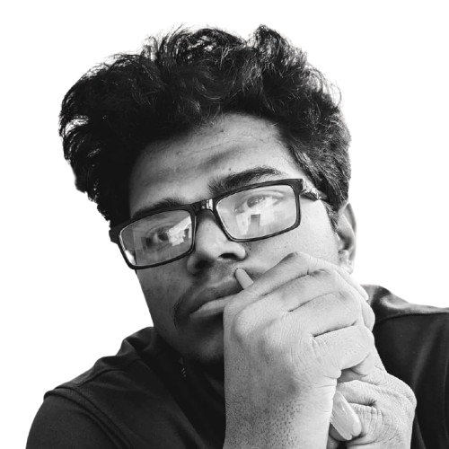
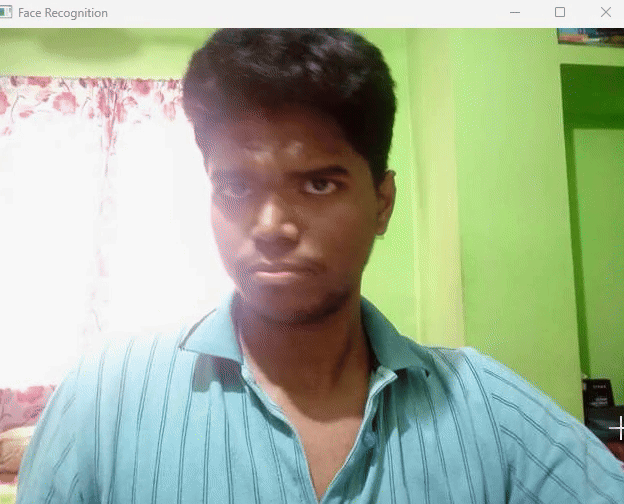

Research was a mandatory part of my BSc program, but for me, it became much more than a requirement. It turned into a journey of discovery about technology, the world, and myself. I wanted to build something meaningful. My thesis became one of the most transformative chapters of my academic life.
Choosing Thesis Partners and Topic
I initially teamed up with someone equally interested in communication systems.
We were fascinated by satellite research and selected Satellite Debris Detection as our topic.
I especially liked a research paper that used Unity Simulation.
However, we soon faced a major issue lack of proper datasets.
At the same time, my partner became busy with personal responsibilities and could not continue.
Seeing this, my advisor strongly advised me to change both my partner and topic.
Choosing a New Partner and Topic
After consulting with my advisor, I reached out to a friend who was highly dedicated to research.
Together, we shifted our focus to Machine Learning and finalized our new topic:
Facial Recognition using Deep Neural Networks (DNNs).
Our proposal was approved, and our journey officially began.
Research and Development Process
We began with an extensive literature review reading papers, articles, and books.
I learned and practiced frameworks like TensorFlow and Keras, alongside online tutorials and courses.
After gaining theoretical confidence, we moved into development.
We experimented with different architectures, datasets, and optimization strategies to improve recognition accuracy.
Overcoming Challenges
Working on Facial Recognition was far from simple.
We faced issues like overfitting, training limitations, and lack of real-world data.
Since we needed live images, I utilized my experience as a Teaching Assistant to request students' help.
Their response was amazing we collected over 100+ images, which became 1500+ after augmentation.
This significantly improved our model’s accuracy.

Picture showing data before augmentation

Picture showing data after augmentation
Testing and Results
After months of effort, we finally reached testing.
We evaluated the model using accuracy, precision, recall, and F1-score.
The results were highly promising. The model successfully recognized faces of both:
• Students in the dataset
• Students not included in the dataset
The system performed perfectly in both cases.

Finalizing Work and Writing the Thesis Book
Once development and testing were complete, we focused on documentation. Since I handled the coding, I took responsibility for writing the entire thesis book. It took nearly a month, including revisions based on advisor feedback.
Pre-defense and Final Defense
The pre-defense session was nerve-wracking but rewarding.
We presented our full methodology, results, and live testing, answering all questions confidently.
After implementing feedback, our Final Defense took place on March 17, 2025.
It was a proud moment we successfully defended our thesis in front of faculty members and external reviewers.


Where My Research Took Me Next
Completing my thesis opened many new opportunities. I later contributed to another research paper on Brain Tumor Detection, which was accepted into a conference. This experience strengthened my passion for research even more.
Why This Journey Matters to Me
This journey taught me:
• How to solve complex problems
• How to work independently and collaboratively
• How to think critically
• How to learn new concepts quickly
• How to communicate research effectively
Most importantly, I learned that you don’t need to know everything before starting.
You learn while doing.
Looking Ahead
As a game developer, my research interests continue to grow.
I am interested in exploring:
• AI-driven NPC behavior using ML-Agents
• Procedural content generation
• Emotion recognition for virtual characters
• AI-powered gameplay testing
• Unity-based simulation research
One of these may become my Master's or PhD research topic in the future.
Research enhanced my problem-solving skills and opened new doors for future opportunities. Though I am deeply passionate about game development, research will always be an integral part of my journey. It has taught me to be persistent, curious, and open-minded. In the future, I would love to work on AI,simulation and game development related research, contributing meaningfully to both fields that I love. Who knows maybe one day I will make this vision a reality.← Back to Blog